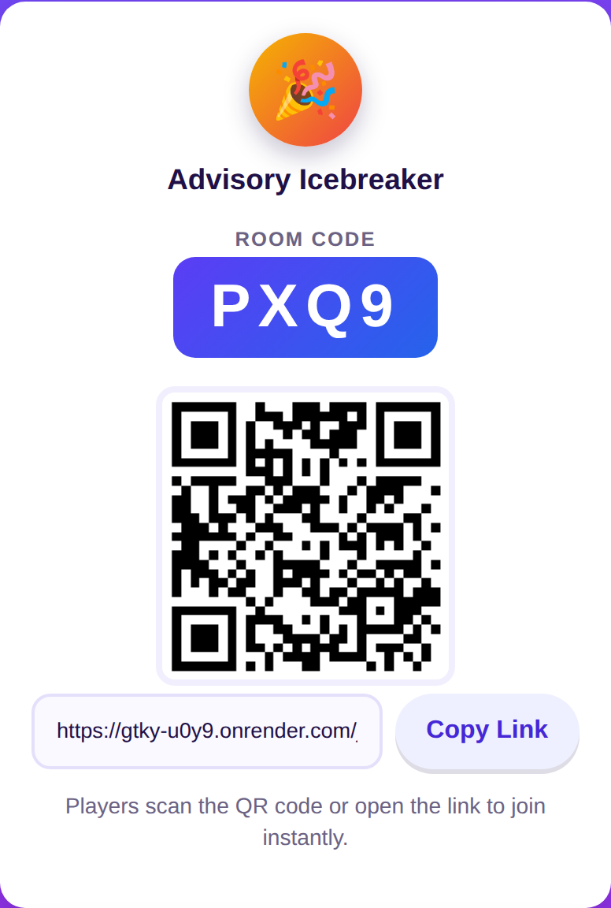
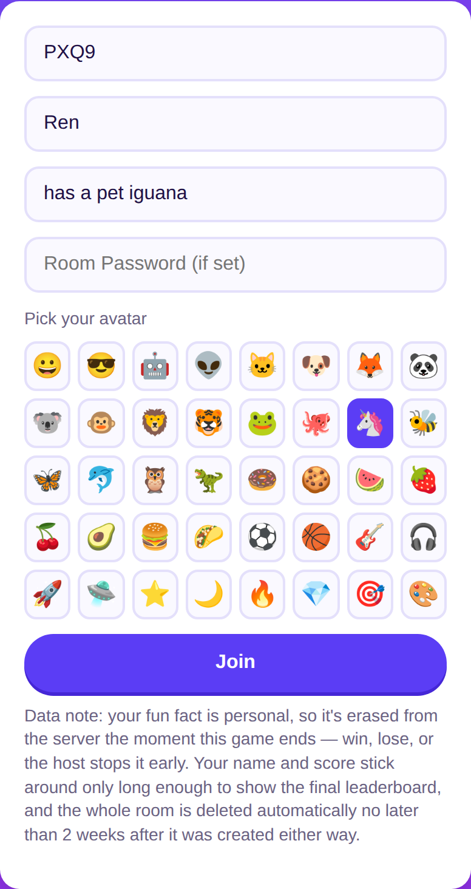
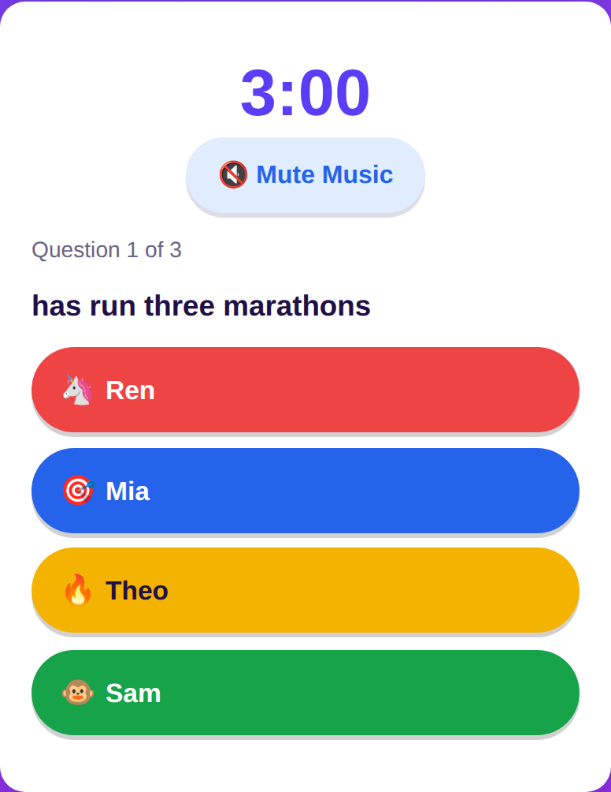
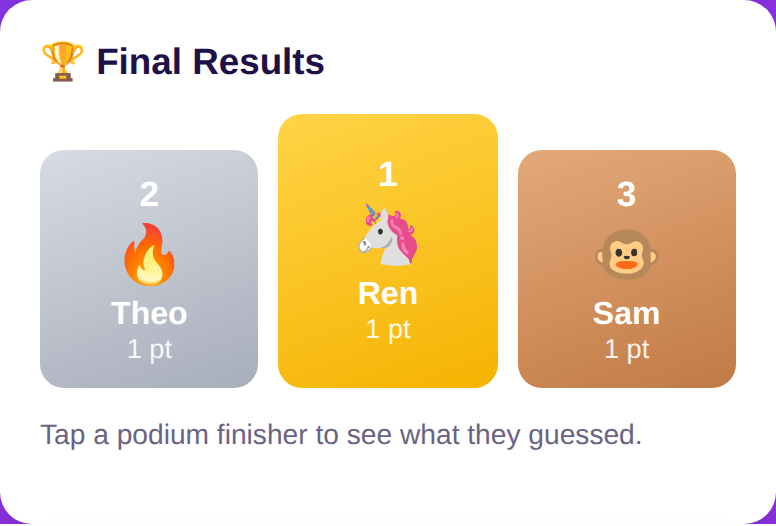

Gotten to Know You
The icebreaker quiz that finds out who actually knows who.
Everyone submits a fun fact about themselves, then races the clock guessing who each other fact belongs to — never their own. No accounts, no app to install, just a code or a QR scan.
Play Now →
Free hosting means the app may take 30–50 seconds to wake up if it's been idle — open it a minute before you want to start.
How to play
1
Host creates a room
Name it, set a password if you want, choose the round timer, and optionally turn on background music. Every room gets a random icon as its logo.

2
Everyone joins and picks an avatar
Scan the QR code or open the short link, submit a name and one fun fact, and choose an avatar from 40 icons.

3
The host starts the game
Everyone gets their own personal quiz — every other player's fact, but never their own — and races the shared countdown at their own pace.

4
Find out instantly, then check the podium
Every guess gets private, instant right/wrong feedback. Once the timer ends (or everyone finishes), the host's screen reveals an Olympic-style podium — tap any top-3 finisher to see exactly what they guessed.

Good to know
- No accounts needed — just a room code or link
- Rooms can be password protected
- The leaderboard and podium only show on the host's screen, so everyone looks up together
- Fun facts are erased from the server the moment a game ends
- Host can end a game early or delete its data anytime
- Everything else is deleted automatically within 2 weeks either way